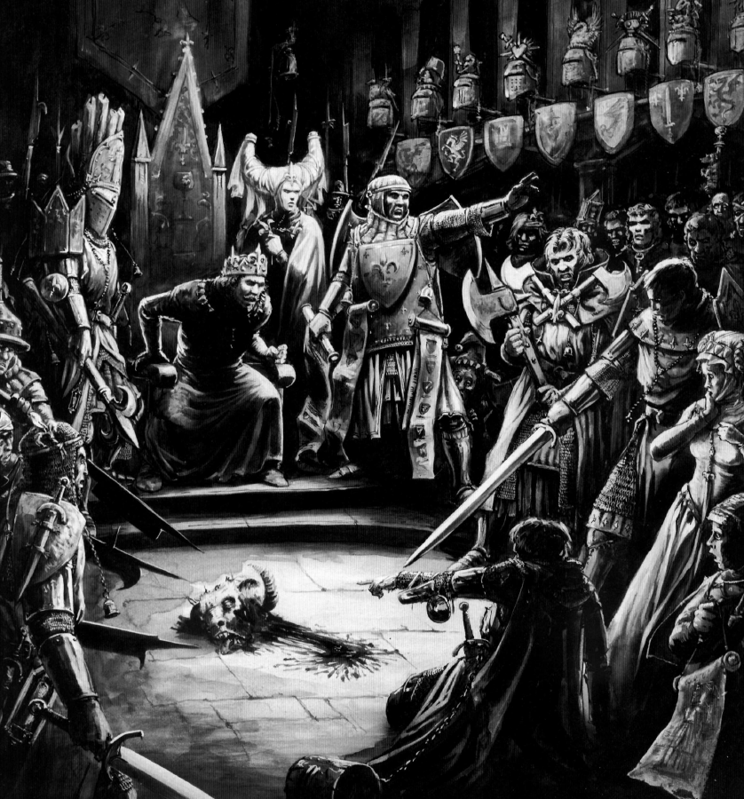
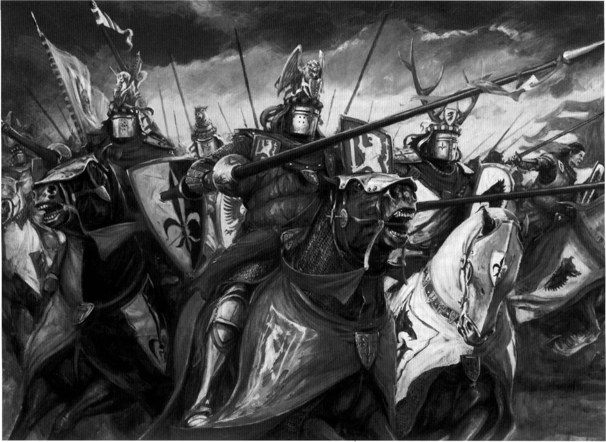
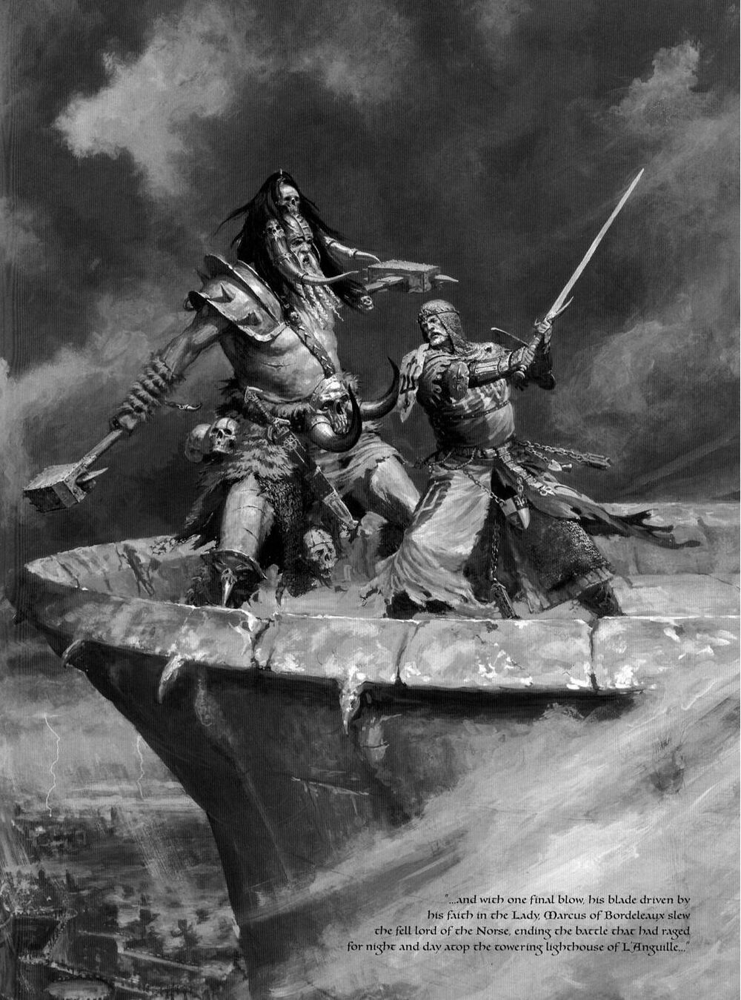

Total War: Warhammer (III)
Strange women lying in ponds distributing swords is no basis for a system of government
Bretonnia este o facțiune încropită parcă pe genunchi dintr-un amalgam de legende Arthuriene, istorii medievale și melancolii provensale tratate într-o manieră care sfîrșește prin a părea drept parodie involuntară. În cazul lui TW:WH, facțiunea nici nu a fost gata pentru lansarea originală, ci a sosit mai tîrziu sub forma unui supliment gratuit în așa numita Old World Edition, fapt care nu o ajută prea mult, căci accentuează impresia unui lucru făcut la repezeală, pentru a ține promisiuni oricum ratate. Toate problemele și defectele jocului sunt amplificate dramatic din perspectiva Bretonniei, iar timpul petrecut aici reprezintă una dintre cele mai triste și frustrante experiențe virtuale de care am avut parte vreodată. Anti-joc în toată regula, căci toate mecanicile facțiunii par să lucreze pentru a zădărnici brutal opțiunile sau inițiativele jucătorului, lăsînd impresia că cei care au conceput campania au fost preocupați mai degrabă să arunce pedepse decît să propună provocări interesante.
Pentru puțin context, povestea Bretonniei în variantă prescurtată ar fi următoarea. Istoria ei începe cu descălecarea unor triburi înspre apus, peste Munții Cenușii, în arealul dintre zona montană și ocean, un spațiu acoperit de păduri fermecate și cîmpii roditoare. Triburile își împart teritoriul în regiuni care vor deveni mai tîrziu ducatele Bretonniei și-și văd de gospodării, orașe înflorind repede în jurul unor ruine elfești. Viața bună nu ține prea mult, iar în scurtă vreme triburile se văd împresurate de dușmani. Codrii sunt bîntuiți de fiare cornute puse pe ruinarea civilizației, de peste mări vin barbarii chitiți pe prăduit în numele Haosului, iar munții colcăie de piei vierzi pornite pe scandal de dragul scandalului. Într-o cumpănă a destinului similară cu cea a Imperiului, o invazie dezlănțuită a pieilor verzi amenință triburile cu dispariția, moment în care apare un Sigmar la ofertă în înfățișarea lui Gilles Bretonul. Băiatul asta reușește să unească o parte din triburi sub steagul său, duce cîteva bătălii strălucite împotriva invadatorilor după care lucrurile se îndreaptă înspre o încleștare în care nu există sorți de izbîndă, dar măcar e asigurată o moarte demnă. În ajunul bătăliei, în timp ce se reculege pe marginea unui lac, lui Gilles i se arată o domniță din adîncuri, purtînd Graalul. Ea îl invită pe Gilles și pe căpitanii acestuia să bea din pocal, iar restul oștenilor își cufundă armamentul în ape. Cu aceste binecuvîntări, rup spinările pieilor verzi ca niciodată, după care Gilles cutreieră întreg tărîmul, îl eliberează de dușmani și devine primul conducător al regatului unit.
Spre deosebire de Imperiul închipuit din agitația occidentului european în zorii epocii moderne, Bretonnia este captivă în feudalism. Masa populației este făcută din țărani bătuți de soartă, degenerați de bazinul genetic limitat și condamnați la o viață mizeră de dat cu furca-n băligar. Pătura conducătoare este alcătuită din nobili, de regulă cavaleri mînați de idealuri care cumva reușesc să rateze întru totul situația dezolantă în care le sunt prizonieri supușii. Visul fiecărui cavaler este să rătăcească prin domnie, în căutarea oportunităților de a-și demonstra curajul și priceperea marțială. Uneori, după ani de pribegie, un astfel de rătăcitor se poate trezi înconjurat de o ceață fermecată în care pășește Cavalerul Verde. Este unul dintre cele mai dificile personaje cînd vine vorba de interpretarea mitului Arthurian, dar în WHF joacă rolul explicit de gardian al Bretonniei și spirit ce încearcă inimile vitejilor. Pribeagul căruia i se arată este provocat la duel, iar dacă spiritul este mulțumit de luptă, îl salută pe cavaler și-l lasă în compania Domniței, care îi prezintă Graalul precum lui Gilles în străvechime. Este una dintre puținele nuanțe interesante și lasă loc ideii unui adevăr mai sinistru din spatele frumuseții Domniței. Căci, pînă la urmă, pentru o entitate care pare atît de preocupată de găsirea și binecuvîntarea celor pe care îi consideră drepți, este la fel de dezinteresată precum aceștia de soarta iobăgimii.
Lăsînd la o parte înfloriturile de poveste, pe harta strategică Bretonnia este divizată în șase provincii împărțite în cîte două regiuni, fiecare reprezentînd unul dintre ducate. Campania poate fi jucată din trei perspective diferite, în funcție de alegere schimbîndu-se poziția de deschidere, liderul facțiunii și efectele aplicate asupra întregii stăpîniri. Bretonnia propriu-zisă ar fi trebuit probabil numită Couronne, după numele teritoriului nordic unde se află capitala, iar la conducere îl avem pe regele Louen, cel mai apreciat cavaler al Domniței de la Gilles încoace. Altă deschidere se poate face la malul oceanului, în Bordeleaux. O alegere cam bizară avînd în vedere că liderul ducatului, Alberic, deși este un personaj cunoscut al universului, nu a avut niciodată parte de un model și reguli specifice în jocul tabletop și per total este mai puțin interesant decît vecinii săi. A fost probabil inclus din dorința de a oferi posibilitatea unei campanii pornite spre mijlocul regatului și avînd, fie și superficial, o temă marinărească. Ultima alegere ne poziționează la frontiera sudică, în Carcassonne, și este asociată într-un mod din nou cam bizar cu o reprezentare a Morganei le Fay drept ambasadoare a Domniței în treburile lumești. Indiferent de deschidere, suntem întîmpinați de problemele obișnuite: bani deloc, armată pe butuci, degringoladă în domnie și o lungă listă de dușmani. Condițiile de victorie sunt însă foarte diferite de cele pe care le-am întîlnit pentru Imperiu sau clanurile piticești.

În cazul Bretonniei trebuie acumulate o mie de puncte dintr-o resursă numită cavalerism, care se obține în primul rînd din bătălii. Fie ca recompensă directă pentru victorie, fie indirect prin căpătarea unor atribute nobile de către comandant. Alte surse de cavalerism țin de buna administrare a domniei, de exemplu prin ridicarea de lăcașuri închinate Domniței. Cavalerismul se poate pierde prin comportament ticălos, de exemplu dacă umplem Bretonnia de bordeluri sau întindem ambuscade din tufișuri în loc să șarjăm glorios înspre tunurile inamicului. Nu e un lucru care să conteze prea mult pe termen lung, căci acumularea de cavalerism nu este plafonată de vreo limită superioară, deci putem gospodări un surplus atît de însemnat încît ajungem la libertatea de a ne deda la toate mizeriile fără vreo consecință reală. Trebuie avută grijă doar la început, căci dacă scăpăm pe minus cu această resursă începe să crească neliniștea în domnie și trupele își pierd moralul. Altfel, de fiecare dată cînd depășim o bornă în drumul către cele o mie de puncte primim binecuvîntări tot mai drăguțe. În general cam aici e și singurul avantaj al Bretonniei, anume că între atîtea blagosloviri nu întîmpină probleme în a menține domnia curată și funcțională chiar și în vremuri grele.
Trebuie menționat că la prima trecere peste cîte un prag de cavalerism cîștigăm dreptul de a-l invoca pe Cavalerul Verde. Am putea vorbi de o mecanică de joc unică pentru facțiune, dar este atît de fadă încît am uitat cu totul de ea. Suntem limitați la patru invocări pe campanie, iar Cavalerul nu ne rămîne alături decît cincisprezece ture înainte să-și vadă de treburi mai interesante. E destul de năprasnic în luptă, dar aceste constrîngeri induc tendința de a-i amîna chemarea pînă la zilele cu adevărat negre, și uite așa ne prinde bătălia finală cu patru invocări la sertar. Destul de amuzant totodată că cei de la CA au uitat să-i dea atributul de sfînt de care se bucură tot restul cavaleriei de elită. Unitățile respective pot alerga și lupta oricît fără să resimtă istovirea, dar bietul Cavaler își cam pierde suflarea dacă urcă un deal prea abrupt.
Revenind la condiții de victorie, a doua cerință ține de succesul unui așa numit război al rătăcirii. Ideea este similară cu cea a unei cruciade, dar jocul nu împrumută nimic din mecanicile introduse în vremea lui Medieval II. Cînd am acumulat suficient cavalerism, jocul ne cere pur și simplu să ne alegem destinația pentru rătăcire, fie în Pustiurile Haosului, unde luptăm cu Arcăucea și năzdrăvanii lui, fie în deșerturile de la miazăzi, unde mișună roiurile de piei verzi ale teribilului Grigore Cur-de-Fier. Ciudat că nu există și opțiunea unei lupte împotriva vampirilor sau a fiarelor cornute, măcar pentru a avea posibilitatea de a vedea ceva nou în fiecare dintre cele trei campanii. În orice caz, alegem rătăcirea care ne place mai mult, apoi tot ce avem de făcut e să îmbarcăm o armată, să navigăm pînă la locația cu pricina (parcurs mult mai rapid și mai sigur decît drumul pe uscat), după care să purtăm o bătălie destul de ușoară și se cheamă că am învins. La o privire mai atentă asupra lucrurilor pe care le avem de făcut pînă la acel punct începe marea suferință.
{kind=link}
{kind=link}
Precum și în viața reală, bunul cel mai de preț într-un joc Total War, a cărui valoare nu poate decît să crească în timp, este pămîntul. Cine are pămînt are bani și putere, cine nu, acela dă cu plugul în brazda de pe pămîntul altuia. Din perspectiva Bretonniei, o dificultate majoră este tocmai aceea că nu prea există oportunități pentru a ne extinde teritoriul. Facțiunile vădit ostile regatului fie sunt hoarde migratoare, fie ocupă domenii care nu sunt deloc ospitaliere pentru oameni. Putem invada Imperiul, dar e o idee stupidă nu numai din perspectiva celor care poate vor să joace totuși rolul unor cavaleri nobili. După cum știm deja, și teritoriile Imperiului sunt rupte de sărăcie și încercuite de dușmani, astfel că pe termen lung ne putem aștepta la creșteri modeste ale veniturilor și la noi confruntări. Cu toate astea, Westernlandul tot ar trebui furat cît se poate de repede, căci altfel e foarte greu să pornim economia. Mai departe, ținte mai rezonabile pot fi domniile de la miazăzi precum Estalia și Tilea. Un impediment acolo e că AI-ul poate produce din acele regiuni mult mai mulți bani decît scoatem noi, mai tot profitul nostru ducîndu-se pe armatele care trebuie să patruleze peste întinderi sălbatice pentru a ne apăra cuceririle. E adevărat că orașele Bretonniei au avantajul unor ziduri gata incluse odată cu atingerea treptei maxime de dezvoltare, dar garnizoanele sunt atît de prăpădite încît nu au nicio șansă împotriva a mai nimic dacă sunt lăsate de capul lor, deci trebuie întotdeauna să avem forțe capabile să se mute între regiuni pentru a suplimenta apărarea. Mai mult, cînd vine tăvălugul Haosului e util ca aceste facțiuni sudice să fie încă în viață, deoarece pot trimite multe armate care să mai întîrzie sau să elimine din invadatori. Asta înseamnă că singura alternativă reală, cel puțin la început, e să ne trecem restul ducatelor în stăpînire, iar pentru acest demers jocul încurajează abordarea diplomatică.
Arborele tehnologic al Bretonniei are două ramuri mari. Una dedicată infrastructurii și economiei, cealaltă cu un specific asupra relațiilor cu vecinii sau popoare îndepărtate. Este o idee bună ca la început să ne apucăm de cercetat heraldica fiecărui ducat, deoarece asta ne deschide opțiunea de a confedera respectivul teritoriu. Bretonnia nici nu suferă penalizări la ordinea publică în urma acestui proces, ci din contră, saltă bucuria în țărănime cînd regatul e unit. Beleaua apare dacă neisprăviții pe care am dori să-i unim nu-și vor binele nici bătuți. Ca să înțelegem nivelul delirului, putem lua ca exemplu următoarea situație. Printr-o conducere strălucită, cu o economie solidă, o armată măcar voluminoasă dacă nu bine pregătită și puțin noroc în sensul că alte facțiuni mari au luat-o pe coajă, ajungem să fim considerați cea mai puternică domnie de pe hartă. Pîrliții din Lyonesse sunt în coada clasamentului, mai au un cătun strivit de sărăcie și cîțiva țărani bolnavi în oaste, pe care-i țin cu fundul în apărare. Au trecut cîteva zeci de ture de cînd le-am cercetat heraldica, iar de atunci relațiile cu ei s-au tot îmbunătățit, deci ne iubesc de uită cum îi cheamă și ar face orice pentru noi. De fapt, orice pînă la a ne trece sub stăpînire, căci atunci cînd vine vorba de asta le răsare că ei de fapt sunt nobili și mai bine mor decît să-și atîrne independența.
Uite așa ajungem să stăm cu niște imbecili inutili în coastă, incapabili să-și administreze teritoriul și trăind numai din trișuri, imbecili care nu ne ajută cu nimic concret în afară de priviri admirative și bătăi pe umăr, și care mai mult încurcă borcanele cînd încearcă să ne tragă în vreun război tembel. Ne cam vine să intrăm cu oastea peste ei și e de neînțeles totuși de ce nu se poate rezolva nimic din vorbă bună atunci cînd balanța de putere este atît de mult înclinată în favoarea noastră. Condiția dură pentru ca ei să accepte oferta pare să fie cea a pierderii unei bătălii, așa că șmecheria care se poate face e să-i tragem într-un război aiurea, să-i trimitem la luptă și, sperînd că vor coopera, să pîndim momentul cînd inevitabil sunt bătuți măr și să le forțăm mîna.

Marea tragedie survine în momentul în care realizăm că, indiferent cît teritoriu am acaparat, ne lipsesc mijloacele de a-l valorifica în mod corespunzător. În poveste, Bretonnia e unul dintre cele mai bogate regate ale Lumii Vechi, plină de castele albe înalte pînă la nori în jurul cărora flutură căluți înaripați în harnașamente bătute cu nestemate. În joc însă, precum în cazul Imperiului, repartizarea teritorială în două regiuni pe provincie limitează din start și destul de sever posibilitățile de dezvoltare. Descoperim imediat, cu ușoară uimire și neliniște, că nu putem produce bani nici măcar din capitalele regionale cu excepția lui Couronne. E nevoie imperioasă de porturi și se poate construi unul rezonabil la Bordeleaux, dar produce cam jumătate din veniturile pe care le-am obține din Marienburg. Dincolo de asta, la nivelul fiecărei regiuni putem alege dacă dorim să axăm economia pe industrie sau agricultură. Industria nu pare să fie o opțiune, căci cel puțin în campaniile discutate aici o astfel de economie a produs venituri substanțial mai reduse decît cea agricolă, dar fermele vin cu setul lor de limitări. O curea suplimentară care împiedică dezvoltarea Bretonniei este așa numita economie a țăranilor. Pe scurt, nu putem recruta țărani pentru oaste în neștire, ci numai într-o limită reglată în mare de numărul de teritorii stăpînite. Altfel rămînem fără mînă de lucru pentru ferme, iar veniturile din agricultură scad abrupt. Mai mult, chiar dacă ignorăm acest lucru sau ne axăm economia pe industrie, dacă vom continua să recrutăm țărani ne alegem cu o penalizare masivă la capacitatea de a reîmprospăta trupele între bătălii, similar cu situația din vechiul RTW în cazul în care am fi reușit să depopulăm complet o provincie și rămîneam fără mînă de luptă. În orice caz, pentru a ne asigura un venit care să ne permită să menținem o economie funcțională, să ne dezvoltăm infrastructura și să întreținem armata, avem nevoie de mormane de porturi și ferme. În măsura posibilului, în fiecare port vrem să plantăm o fecioară mărinimoasă. Sperăm că mărinimia face referire la domenii ale finanțelor și nu alte îndeletniciri necavalerești, dar în orice caz, fecioarele mărinimoase făcînd rondul prin porturi vor reuși în timp să crească semnificativ veniturile din acele teritorii. Asta nu înseamnă însă că ni se va revărsa opulența din cufere, ci doar că vom putea întreține cîteva armate de țărani care să fugă prin domie să ne apere cetățile, plus o armată de elită pentru războiul rătăcirii.
Depresia este întronată cînd înțelegem cît de frustrantă și lipsită de inițiative reale este dimensiunea strategică a jocului. Din orice poziție de deschidere suntem împresurați de dușmani, și o năprasnică sulă în coastă este ducatul Mousillon. În poveste, Mousillon este o provincie a Bretonniei măcinată de un blestem misterios, acoperită de negură și care servește drept liman al sufletelor asemenea înnegurate. În TW:WH, ducatul e reprezentat printr-o prăpădenie de cătun care în mod inexplicabil este fortificat pînă la fundații cu o garnizoană sinistră de cavaleri negri, gardieni ai criptelor și alte orori, și este aflat sub comanda unui personaj faimos, Ducele Roșu (The Red Duke, sau cum îi spun eu cu drag, The Red Puke). Din prostia asta de sătuc l-am văzut pe Duce ridicînd și cîte trei mormane de trupe. E adevărat că la început sunt gunoaie, dar nu e ca și cum armatele noastre ar fi mai bune sau măcar comparabile în dimensiuni. Sunt totuși trei puhoaie de morți umblători în condițiile în care noi încă ne aflăm la punctul campaniei unde ne drămuim banii ca să putem întreține mîndria celor două unități de țărani arcași. Dacă e lăsat să-și facă de cap, Ducele ajunge să recruteze inclusiv orori de nivel mare din bombița aia de sat și-și împrăștie corupția în tot regatul, astfel că trebuie eliminat cît mai repede. Simultan însă, pădurile din Bretonnia și Estalia sunt locuri unde apar cu regularitate hoardele fiarelor cornute, iar una o să fie mereu prezentă în deschiderea jocului. Să ne imaginăm iar în situația în care avem două unități de țărani obidiți și ne gîndim cum să eliminăm cu ele stivele Ducelui, cînd uite-așa deodată a sărit din tufișuri o turmă de minotauri dezaxați chitită pe trecut domeniul nostru prin coarne și copite.
{kind=link}
{kind=link}
Dacă nu e suficient, marea este străbătută în permanență de prăduitori porniți din Norsca. Nu vorbim de niște Haralzi cu securi de piatră, ci de sonați călare pe mamuți care poartă în spinare întregi altare de război, despre dragoni de gheață, batracieni satanici care mînuiesc taine vrăjitorești și alte nebunii în fața cărora suntem lipsiți de răspuns în luptă dreaptă, dar salvați de către sfînta funcție de auto-rezolvare dacă reușim să adunăm suficienți țărani laolaltă. Peste toate astea, amurgul zeilor vine din Munții Cenușii, anume din partea unui trib de piei verzi numit Skullsmasherz, respectiv din tribul de spiriduși lunatici cunoscut drept Crooked Moon. Terminații ăștia sunt atît de agresivi și au trișurile calibrate la un nivel atît de absurd încît pur și simplu pustiesc planeta de capul lor. Cui îi trebuie invazia Haosului cînd stivele de spiriduși ale lui Skarsnik sunt suficiente ca să facă Imperiul scrum, iar dacă bate vîntul cu ghinion ne trezim cu ei în mijlocul regatului, deversări întregi de dilimaci pe ciuperci care năvălesc direct pe sub munți și nu lasă două pietre una peste alta în trecerea lor. Vînarea acestor năpaste e cea mai sinistră activitate, vechile fortărețe piticești pe care și le-au făcut sălaș găsindu-se în fundul unor trecători foarte greu de străbătut. Sunt lungi, întortocheate și cer un preț mare în vieți de oșteni numai în urma intemperiilor, asta dacă nu avansăm în ritm de melc si nu ridicăm tabăra la sfîrșitul fiecare ture. Și cum nu ne permitem luxul a nici măcar două armate cînd trebuie să le venim de hac, tristețea devine vehementă dacă la jumătatea unui astfel de drum ne lovesc una-două invazii suplimentare din Norsca sau Mousillon, sau răsare Skarsnik însuși din vreo văgăună cu cîteva stive de lunatici.
Pentru cine încă nu a cedat nervos, există un element suplimentar care să faciliteze instaurarea amărăciunii, sub forma dilemelor specifice Bretonniei. Orice facțiune este pusă din cînd în cînd în fața unui scenariu cu două posibilități de soluționare ce jonglează între diverse recompense și penalizări. Un exemplu simplu este cel al unei creaturi întinate de Haos care ne sosește în domnie și ne oferă în dar o importantă sumă de bani. Putem accepta banii, dar ne alegem și cu o prezență a corupției haotice destulă vreme, sau putem refuza, caz în care domnia va fi mai bine străjuită împotriva influențelor nefaste pentru aceeași perioadă. Dilemele Bretonniei însă în general ne pun să alegem între opțiuni precum pierderea veniturilor din orașe cu cîteva zeci de procente pentru un interval dat, sau creșterea cheltuielilor de întreținere ale armatei pe același interval. Greu de lămurit de ce anume ar mai fi nevoie și de punctul nostru de vedere, din moment ce ambele alegeri duc vertiginos la faliment. Uneori pare că și TW:WH înțelege asta și renunță într-adevăr la cerințe din partea jucătorului. Tocmai am început o campanie militară pe care vrem să o finalizăm repede ca să ne concentrăm pe altă amenințare? Jocul ne anunță că bravul căpitănaș Tristan Letard s-a făcut de rușine, a greșit direcția și trupele s-au pierdut, astfel că vreo zece ture de acum încolo toate deplasările pe harta strategică sunt puternic limitate.
Adunate laolaltă, toate aceste elemente ne limitează sever opțiunile și transformă campania într-un simulator de apăsat butonul pentru încheiat tura în vreme ce ținem fundul în poartă. Banii vin cu țîrîita, îi reinvestim imediat în ferme sau porturi care au nevoie de foarte mult timp pentru a ne recupera cheltuielile, iar armatele prăpădite aleargă de colo-colo nu după planurile noastre, ci după melodia pe care ne pun dușmanii să jucăm. Este o experiență frustrantă, în cursul căreia suntem mereu constrînși să reacționăm la evenimente asupra cărora nu avem control, iar pîrghiile prin care să putem prelua inițiativa sunt absente. Pare uneori că întreaga hartă ne este ostilă. Inclusiv facțiunile care ar trebui să ne fie aliate sau neutre au în realitate o atitudine pasiv-agresivă și caută orice oportunitate pentru a ne strica socotelile. Am vorbit deja despre săracii de care trebuie să ne milogim ca să ni se alăture în domnie, dar putem menționa și vecinii noștri din Athel Loren, folosiți de AI cu o perversiune rar întîlnită. Suntem practic obligați să ne ferim de alianțe cu orice facțiune piticească, deoarece în secunda în care am bătut palma, piticii din fundul unei văi îndepărtate le vor declara război elfilor. Dacă refuzăm să onorăm legămîntul și rupem alianța, credibilitatea ne este sever afectată și întreaga hartă începe să ne privească dușmănos (ciudat că nu pierdem cavalerism, totuși). Dacă acceptăm să-i „ajutăm”, evident că în tura următoare au răsărit cîteva stive de elfi supărați din codru, dar nu în direcția piticilor.

Pe partea de militărie și tactică, armatele Bretonniei pot fi conduse fie de nobili, fie de profetese ale Domniței ce au acces la una din trei taine vrăjitorești, anume taina fiarelor, a cerurilor sau a vieții. Deși facțiunea nu are mecanica liniilor de aprivizionare ce cresc cheltuielile de întreținere cu fiecare armată, sărăcia generală a regatului ne obligă să ne limităm la oști conduse de comandanții legendari, cei de rang mai mic fiind folosiți exclusiv pentru a coloniza de capul lor teritorii noi sau pentru a plimba stive de țărani în bătălii rezolvate automat. Faptul că nu ne putem baza numai pe țărani în oaste și ca trebuie să apelăm la nobili vine cu o altă problemă, anume aceea că unitățile nobile au costuri de întreținere ridicole. Pentru a fi aduse la un nivel rezonabil, comandatul armatei trebuie să depună o serie de jurăminte în fața Domniței, lucru tradus prin cheltuirea unor puncte în acest sens la creșterea în nivel. În particular e o perspectivă tristă pentru profetese, căci le întîrzie accesul la magie. Agenții sunt de două specializări, fie paladini ce sunt utili doar ca bătăuși pe cîmpul de luptă, fie fecioare cu acces la aceleași taine vrăjitorești. Însă nici pe ele nu apucăm să le folosim în luptă din cauza acelorași limitări economice, limitări ce ne constrîng să recrutăm numai fecioare mărinimoase pe care să le trimitem la produs în porturi.
Țăranii pot fi ridicați la luptă direct din bălegarul fermelor, dar sunt atît de prăpădiți încît prin simpla lor prezență scad șansele victoriei. Mult mai buni sunt țăranii arcași ce vin în trei sortimente, fie cu săgeți obișnuite, aprinse sau otrăvite. Majoritatea țăranilor pot fi trecuți printr-un antrenament rudimentar și echipați cu săbii sau sulițe, eventual și cu scuturi. Singurii cît de cît rezonabili în luptă sunt țăranii cu prăjini, aceștia putînd să străpungă armura și să lupte eficient împotriva unităților mari, precum cavaleria sau monstruleți. Treapta cea mai înaltă a infanteriei este dată de scutierii nobililor, scutieri ce sunt o versiune mai ieftină și mai slabă a unităților imperiale echipate cu săbii mari. Tot ca țărănime sunt clasificate și piesele de artilerie, anume catapulte cu contragreutăți ce pot lansa bolovani convenționali sau binecuvîntați de Domniță. Ca suport din partea Domniței mai pot fi chemați pelerini echipați fie cu scuturi și săbii, fie adunați în jurul unui relicvar cu o aură benefică pentru restul armatei. Există chiar și cavalerie țărănească sub forma unor răzeși pe mîrțoage, dar singurii cît de cît utili sunt cei cu arcuri. Dată fiind calitatea slabă a acestor trupe, nicio luptă serioasă nu poate fi cîștigată fără multă imaginație și tehnici nu tocmai cavalerești. Nici nu e cazul să ne punem problema asediilor, unde ar fi nevoie să sacrificăm un număr absurd de țărani chiar și pentru cîștigarea unor ziduri slab apărate. Astfel, soluția universală este rezolvarea automată a bătăliilor folosind stive mari de țărani. În general, oricare astfel de campanie se poate termina cu un număr de bătălii purtate manual ce nu ocupă toate degetele de la mîini.
Nobilii Bretonniei luptă exclusiv călare, deci sunt la rîndul lor complet irelevanți în înghesuiala asediilor, dar asta nu înseamnă că merită osteneala în cîmp deschis. Primele trei unități, anume cavalerii rătăcitori, cavalerii tărîmului și cavalerii misionari sunt numai o risipă de bani și o povară pe economie. Nu neapărat pentru că ar fi unități slabe, ci din cauza motorului jocului. De la Empire: Total War încoace, unitățile de cavalerie și-au pierdut capacitatea de a executa o șarjă și de a se retrage. Dacă nu avem condiții de laborator, ce se întîmplă mereu e că entități individuale rămîn „prinse” în unitatea țintă. Nu reușesc să se detașeze și sfîrșesc murind pe capete, astfel că șarja produce mai mereu pagube mai însemnate în cavaleria noastră decît în inamic. Unitățile bune vin abia la sfîrșit de tot, sub forma cavalerilor și gardienilor Graalului, a cavalerilor pe armăsari înaripați sau suiți pe niște rude mai pufoase ale grifonilor. Au arme fermecate, armură grea, au bonusuri împotriva unităților mari sau bine încastrate la rîndul lor în armură. Cel mai important, toate aceste unități au atributul de a reprezenta sfinți vii, astfel că nu obosesc niciodată în luptă. Dar vin abia la sfîrșit de tot și sunt atît de scumpe încît nu le folosim decît pentru bătălia finală, care închide campania.
Și uite-așa trecem prin zeci sau sute de ture pline numai de frustrările povestite mai sus, după care ne bucurăm vreo zece minute de puțin cavalerism autentic și măreție, de sînge și de o bătălie cum ar trebui să fie mai toate. Bine că măcar acolo e loc de un strașnic, dar efemer, For the Lady!! ■
Galerie imagini